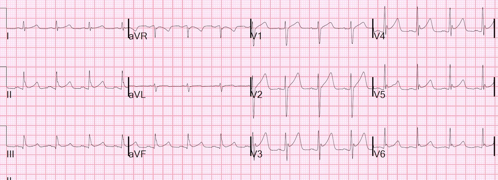
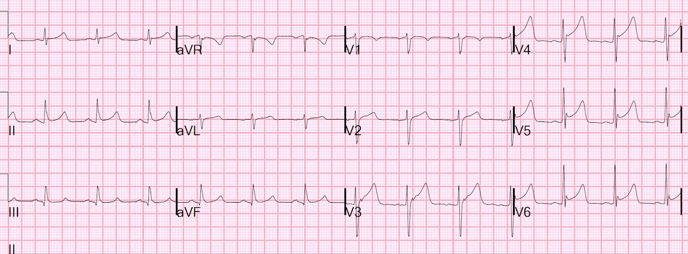
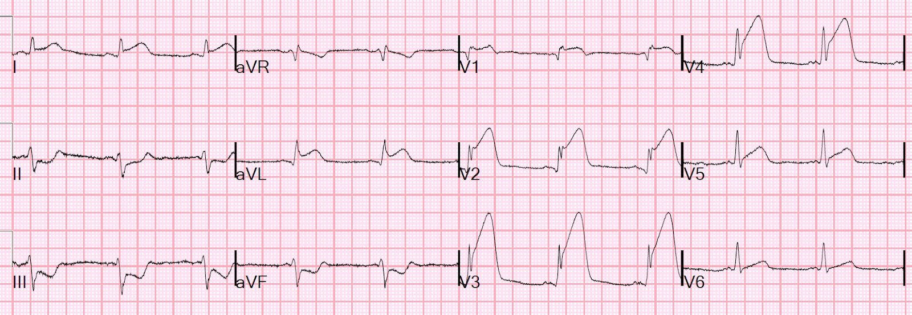
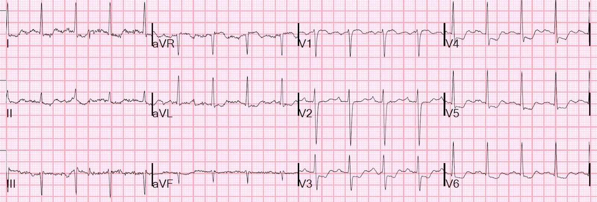
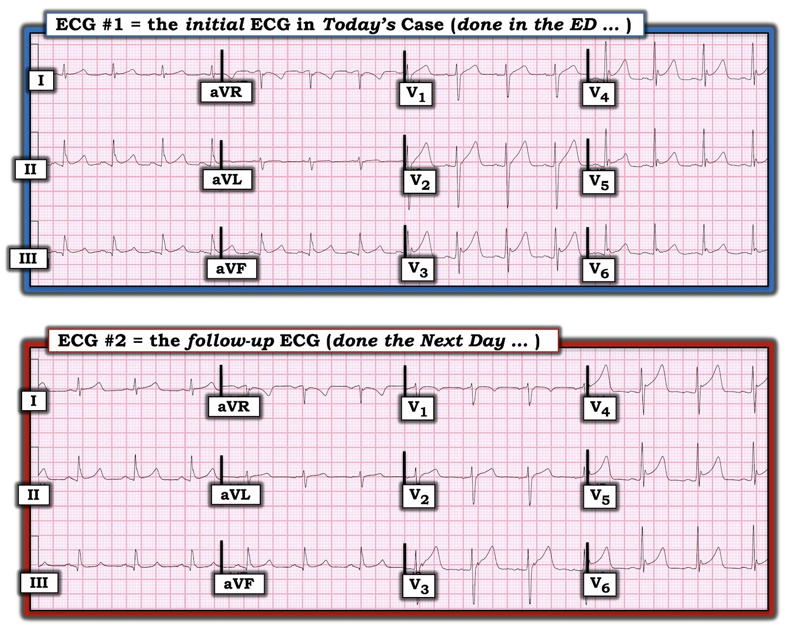
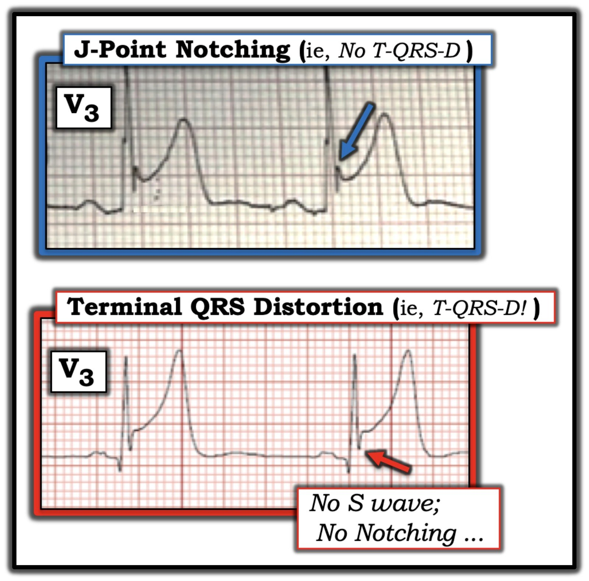
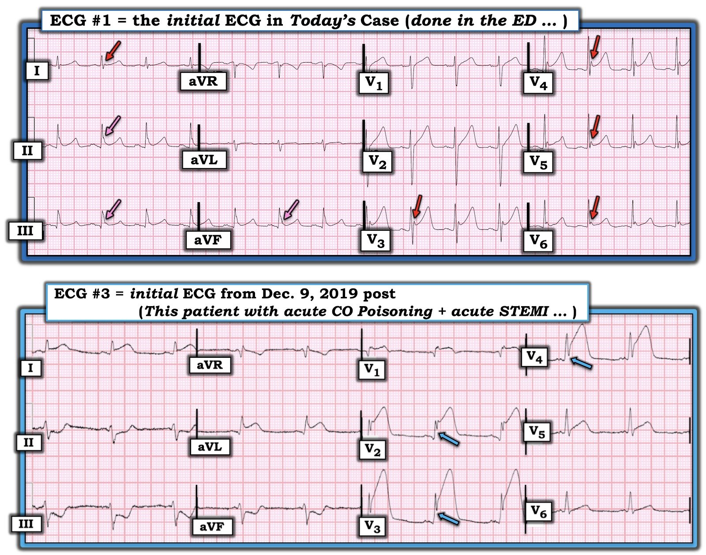

18/02/2022 — Một bệnh nhân hôn mê với nồng độ carbon monoxide trên 50%
Bản dịch tiếng Việt của bài "A comatose patient with a carbon monoxide level over 50%" – Dr. Smith’s ECG Blog. Giữ nguyên toàn bộ 9 hình ảnh của bản gốc.
Một nam thanh niên bị phơi nhiễm khí carbon monoxide (CO) do tai nạn. Bệnh nhân hôn mê, đã được đặt nội khí quản và nồng độ carboxyhemoglobin ban đầu trên 50%.
Điện tâm đồ luôn được ghi trong ngộ độc CO. Đây là điện tâm đồ của bệnh nhân.


Người ta đưa điện tâm đồ này cho tôi xem vì lo ngại ST chênh lên do thiếu máu cục bộ, điều chắc chắn có thể xảy ra do ngộ độc CO nặng, hoặc do hội chứng vành cấp (ACS) đi kèm.
Thực tế, có bằng chứng phòng thí nghiệm cho thấy ngộ độc CO làm tăng các tập hợp tiểu cầu–bạch cầu trung tính và nồng độ myeloperoxidase (MPO) huyết tương, và do đó có thể thúc đẩy ACS (dù điều này hoàn toàn chưa được chứng minh trên lâm sàng). Intravascular Neutrophil Activation Due to Carbon Monoxide Poisoning (Hoạt hóa bạch cầu trung tính trong lòng mạch do ngộ độc carbon monoxide)
Bạn nghĩ gì về điện tâm đồ này?
Nhận định của tôi là tất cả đều là ST chênh lên biến thể bình thường.
STE thành dưới: có sóng J nổi bật ở tất cả các chuyển đạo. Không có ST chênh xuống soi gương ở aVL.
STE thành trước: Sóng J nổi bật và biên độ QRS cao.
Nếu dùng công thức phân biệt tắc LAD – biến thể bình thường, ta có: QTc = 436 ms
Sóng R ở V4 = 13 mm, QRS ở V2 = 21 mm, STE tại thời điểm 60 ms sau điểm J ở V3 = 2.5 Giá trị công thức = 18.7. Giá trị này gợi ý tắc LAD. Tuy nhiên, biến số đóng góp nhiều nhất vào kết quả này là QTc 436 ms, khá dài và kéo lệch kết quả của công thức về phía tắc LAD. Để so sánh, nếu QT bằng mức trung bình giữa nhóm tắc LAD (420 ms) và nhóm biến thể bình thường (390 ms) trong nghiên cứu của chúng tôi, thì QTc sẽ là 405 ms và giá trị công thức sẽ là 17.06, một giá trị hiếm gặp trong tắc LAD Điều mà chúng ta có bằng chứng, nhưng chưa được biết đến rộng rãi, là ngộ độc CO nhiều khả năng làm kéo dài khoảng QT. Vì vậy, khoảng QT tương đối dài này KHÔNG phải do thiếu máu cục bộ mà có thể là hậu quả của ngộ độc CO. Yelken B và cs. The assessment of QT intervals in acute carbon
monoxide poisoning (Đánh giá khoảng QT trong ngộ độc carbon monoxide cấp)
Tôi không lo lắng về điện tâm đồ này.
Tình trạng hôn mê hồi phục hoàn toàn sau 3 lần điều trị oxy cao áp tại cơ sở hiện đại đẳng cấp thế giới của chúng tôi. https://hennepinem.com/fellowships/hyperbaric-medicine/.
Đọc thêm về ngộ độc CO và thiếu máu cục bộ cơ tim tại đây (điện tâm đồ được dán bên dưới): What is the treatment for this subendocardial ischemia? (Điều trị tình trạng thiếu máu cục bộ dưới nội tâm mạc này là gì?)
Troponin đạt đỉnh 43 ng/L (chỉ tăng nhẹ; phần lớn bệnh nhân ngộ độc CO nặng đến mức này có troponin tăng đáng kể, đơn giản do thiếu oxy VÀ do độc tính trực tiếp của CO lên tế bào cơ tim)
Đây là điện tâm đồ ngày hôm sau:


Về cơ bản không thay đổi, không có diễn tiến, chứng tỏ điện tâm đồ trước đó là ST chênh lên biến thể bình thường nền của bệnh nhân
Đôi khi nhồi máu cơ tim do tắc và ngộ độc CO xảy ra đồng thời!
Bệnh nhân xuất viện với thần kinh nguyên vẹn.
______________________________
Xem ca này: bệnh nhân tỉnh, không đau ngực nhưng có nồng độ CO 34%:
CO poisoning. Routine ECG recorded before hyperbaric therapy….Are they related? (Ngộ độc CO. Điện tâm đồ thường quy ghi trước điều trị oxy cao áp… Chúng có liên quan với nhau không?)
Với điện tâm đồ này:


________________________
Xem ca ngộ độc CO điển hình này:
What is the treatment for this subendocardial ischemia? (Điều trị tình trạng thiếu máu cục bộ dưới nội tâm mạc này là gì?)



===================================
BÌNH LUẬN CỦA TÔI, bởi KEN GRAUER, MD (18/2/2022):
===================================
Một ca bệnh sâu sắc do Dr. Smith trình bày về người thanh niên này, vào viện vì ngộ độc CO do tai nạn. Tôi tập trung bình luận vào một điểm kỹ thuật thường bị bỏ qua — và — vào một điểm lâm sàng quan trọng mà tiếc là chưa được các bác sĩ lâm sàng đánh giá đúng mức, ngoại trừ những người thường xuyên theo dõi Dr. Smith’s ECG Blog.
Điểm kỹ thuật thường bị bỏ qua:
Như Dr. Smith đã nêu — điều ủng hộ nhận định của chúng tôi rằng điện tâm đồ ban đầu trong ca hôm nay là một biến thể tái cực lành tính, chính là sự không có bất kỳ thay đổi đáng kể nào về hình dạng chung của sóng ST-T ở điện tâm đồ ghi lại (ghi vào ngày hôm sau) — so với điện tâm đồ ban đầu ghi tại khoa cấp cứu (ED) ( = điện tâm đồ #2 so với điện tâm đồ #1 trong Hình 1). Dù vậy — giữa 2 bản ghi CÓ một sự khác biệt!
- MẤU CHỐT để so sánh chính xác các bản ghi liên tiếp — là phải chắc chắn rằng bạn đang “so sánh táo với táo — chứ không phải so sánh táo với cam”.
- Việc thấy thay đổi về trục mặt phẳng trán và/hoặc về tăng tiến sóng R ở các chuyển đạo trước tim giữa các bản ghi liên tiếp là thường gặp. Điều này có thể do thay đổi nhỏ về độ nghiêng giường của bệnh nhân (tức là, nếu ở bản ghi đầu tiên bệnh nhân khó thở quá nên không nằm phẳng được) — hoặc, do thay đổi vị trí đặt điện cực ở các chuyển đạo trước tim — hoặc, đơn giản là do những biến đổi nhỏ khó giải thích về hình dạng QRST đôi khi xảy ra từ bản ghi này sang bản ghi khác. Những thay đổi này có thể tạo ra khác biệt về hình dạng QRS và sóng ST-T giữa các bản ghi mà không phải do bất kỳ thay đổi nào trong tình trạng lâm sàng của bệnh nhân.
HÃY XEM 2 bản ghi liên tiếp trong Hình 1:
- Trục mặt phẳng trán có giống nhau ở cả hai bản ghi không?
- Tăng tiến sóng R (và vùng chuyển tiếp) có giống nhau không?
- NẾU hoặc trục hoặc tăng tiến sóng R đã thay đổi — Thay đổi này ảnh hưởng thế nào đến hình dạng QRS và sóng ST-T?
TRẢ LỜI:
Trục mặt phẳng trán giống hệt nhau ở điện tâm đồ #1 và điện tâm đồ #2 trong Hình 1 (tức là, khoảng +70 độ). So sánh 2 bản ghi này theo từng chuyển đạo — hình dạng QRS gần như giống hệt nhau ở mỗi chuyển đạo trong 6 chuyển đạo chi. Điều này cho biết việc so sánh theo từng chuyển đạo các thay đổi sóng ST-T ở 6 chuyển đạo chi đúng là “so sánh táo với táo”, nên bất kỳ khác biệt nào về hình dạng sóng ST-T ở bất kỳ chuyển đạo nào trong 6 chuyển đạo chi này sẽ là khác biệt thật!
- Vì không có bất kỳ thay đổi nào (ngoài việc biên độ sóng T tăng rất nhẹ ở chuyển đạo aVL của điện tâm đồ #2) — chúng ta có thể tự tin kết luận “Không thay đổi”.
Ngược lại — tăng tiến sóng R ở điện tâm đồ #2 khác so với ở điện tâm đồ #1.
- Vùng chuyển tiếp (nơi chiều cao sóng R trở nên lớn hơn độ sâu sóng S) — ở điện tâm đồ #1 nằm giữa V3 và V4. Lưu ý rằng ở điện tâm đồ #1, biên độ sóng R đã bằng độ sâu sóng S ngay từ chuyển đạo V3.
- Chuyển tiếp xảy ra muộn hơn ở điện tâm đồ #2 (tức là, chiều cao sóng R chưa vượt quá độ sâu sóng S cho đến V4–V5 — và QRS vẫn còn âm là chủ yếu ở chuyển đạo V4).
- Điều này có nghĩa là việc so sánh liên tiếp để tìm thay đổi sóng ST-T giữa 2 bản ghi này trong Hình 1 không giống như “so sánh táo với táo” — vì vùng chuyển tiếp bị chậm lại ở điện tâm đồ #2, và hình dạng QRS không giống nhau.
- Chẳng phải sóng T ở chuyển đạo V1 của điện tâm đồ #2 giờ đã âm — trong khi ở điện tâm đồ #1 nó dương hay sao?
- Chẳng phải sóng T ở chuyển đạo V2 của điện tâm đồ #1 cao hơn đáng kể so với sóng T ở chuyển đạo V2 của điện tâm đồ #2 hay sao?
- Chẳng phải ST chênh lên tại điểm J nhiều hơn ở chuyển đạo V2 và V3 của điện tâm đồ #1 hay sao?
ĐIỀU CỐT LÕI: Khi trục mặt phẳng trán hoặc tăng tiến sóng R thay đổi giữa các bản ghi liên tiếp (điều rất hay xảy ra!) — chúng ta phải tính đến những thay đổi đó bằng một “phán đoán giá trị” xem liệu những khác biệt về hình dạng sóng ST-T đó có phản ánh một thay đổi “thật” (tức là, có ý nghĩa lâm sàng) hay không — hay những khác biệt đó ít khả năng có ý nghĩa lâm sàng.
- Tôi hoàn toàn đồng ý với đánh giá của Dr. Smith — rằng trong ca hôm nay, những khác biệt về hình dạng sóng ST-T mà chúng ta thấy giữa 2 bản ghi ít khả năng có ý nghĩa lâm sàng (và nhiều khả năng nhất là kết quả của thay đổi nhỏ về vị trí đặt điện cực ở các chuyển đạo trước tim).
- ĐIỂM cần nhớ: Hãy nhớ tính đến trục mặt phẳng trán và tăng tiến sóng R khi so sánh các bản ghi liên tiếp!


Điểm lâm sàng quan trọng:
Trước khi làm việc với Dr. Stephen Smith — khái niệm Terminal QRS Distortion (T-QRS-D, biến dạng phần cuối QRS) hoàn toàn xa lạ với tôi. Đây là một khái niệm tuyệt vời, đôi khi có thể hỗ trợ vô giá để phân biệt giữa tái cực sớm với OMI cấp. 3 điện tâm đồ mà Dr. Smith trình bày ở trên trong ca hôm nay giúp hiểu rõ thêm điều gì là, và điều gì không phải là T-QRS-D.
- T-QRS–D — được định nghĩa là không có cả sóng J lẫn sóng S ở một trong hai chuyển đạo V2 hoặc chuyển đạo V3 (và đôi khi cả chuyển đạo V4). Dù định nghĩa đơn giản — tôi cũng đã phải luyện tập một chút mới trở nên thoải mái và tự tin khi nhận diện nó.
Ngày càng có nhiều ví dụ khác về điều gì là T-QRS-D và điều gì không phải trên Blog của Dr. Smith. Để tiện tham khảo — Hãy xem 2 đường link sau:
- HÃY BẮT ĐẦU VỚI BÀI NÀY = bàn luận từng bước của Brooks Walsh & Steve Smith về T-QRS-D.
- LUYỆN TẬP THÊM = 4 ví dụ (3 dương tính; 1 không phải T-QRS-D).


Thế còn các điện tâm đồ trong ca hôm nay thì sao?
Để minh họa sự khác biệt giữa điều gì là và không phải là T-QRS-D — tôi đã đặt bản ghi thứ 1 và thứ 3 trong ca hôm nay cạnh nhau ở Hình 3.
- Điện tâm đồ #1 ( = bản ghi TRÊN trong Hình 3): Như Dr. Smith đã nêu — các thay đổi sóng ST-T ở bản ghi này gợi ý mạnh một biến thể tái cực. Ngoài khía điểm J nổi bật ở nhiều chuyển đạo (mũi tên ĐỎ trong Hình 3) — còn có tăng tiến sóng R bình thường với biên độ QRS đủ lớn — không có ST chênh xuống soi gương — hình dạng sóng ST-T tương tự nhau ở nhiều chuyển đạo (tức là, không có các thay đổi khu trú thường thấy trong nhồi máu cấp) — và, “trát đậm” phần cuối QRS (mũi tên HỒNG), mang ý nghĩa lâm sàng tương tự như khía điểm J nổi bật. Việc không có diễn tiến trên bản ghi lặp lại vào ngày hôm sau (điện tâm đồ #2) ủng hộ kết luận rằng điện tâm đồ #1 là một biến thể tái cực, và không chỉ ra một biến cố tim cấp.
- Điện tâm đồ #3 ( = bản ghi DƯỚI trong Hình 3) — được Dr. Smith thêm vào ca hôm nay để đưa ra một ví dụ trong đó ngộ độc CO cấp đi kèm một STEMI rõ ràng (Ca bệnh được bàn luận chi tiết trong bài đăng ngày 9 tháng Mười Hai năm 2019 trên Dr. Smith’s ECG Blog). Lưu ý các mũi tên XANH — làm nổi bật T-QRS-D rõ ràng, thấy ở đây trong 3 chuyển đạo có ST chênh lên nhiều nhất.
ĐIỂM cần nhớ: Rõ ràng — chẩn đoán tắc LAD cấp đã hiển nhiên ở điện tâm đồ #3 mà không cần nhận diện T-QRS-D. Nhưng sẽ có những ca thỉnh thoảng gặp, trong đó bạn có thể không chắc liệu có (hay không có) OMI cấp — trong trường hợp đó, nhận ra T-QRS-D có thể khẳng định ngay lập tức nghi ngờ của bạn về sự cần thiết phải thông tim kịp thời.

